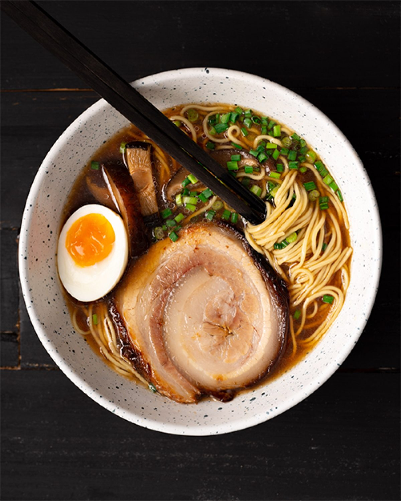

Home
Shoju Ramen Recipe

Love noodle soup? Then you’ll want my recipe for a flavourful, restaurant-style homemade Japanese shoyu ramen! This delightful chicken ramen soup broth is so jam-packed with umami goodness that you’ll want the whole pot to yourself. I like to serve it with my homemade chashu pork belly, but you can add any protein of your choice.
Ingridients
- 2kg chicken wings
- 2 carrots
- 2x 20cm pieces kombu
- 6 dried shitake mushrooms
- 6 spring onions
- 1 head of garlic
- 4cm piece ginger
- 1/4 cup soy sauce
- cooked ramen noodles
- chashu pork, to serve
- medium-soft boiled eggs, to serve
- 12 cups of water
- tare: 1/4 cup soy sauce, 2tbsp mirin
Steps
- Preheat the oven to 200°C/390°F.
- Cut the chicken wings through their joints into smaller pieces. Spread the wings and carrots out in a large roasting tin and cook for 45-60 minutes in the oven or until golden brown.
- Transfer the roasting tin to your stovetop. Turn the heat to high and when the roasting juices in the tin start to bubble, add in 2 cups of water. Use a wooden spoon to scrape up all the browned bits from the bottom of the pan. Then transfer all the chicken, carrots and the liquid into a large stock pot.
- Place the stock pot over a high heat and add the kombu, shitake, 6 spring onions, garlic, ginger and soy sauce. Top up with 10 cups of water. Bring the stock to a simmer then reduce the heat to low and simmer gently for 3 hours, skimming the surface every so often.
- In the meantime, make the tare by mixing the ingredients in a small bowl.
- Remove and reserve the shiitake mushrooms. Remove and discard the chicken and aromatics. Strain the broth through a fine mesh sieve. Pour the broth into a clean saucepan. Taste and season with the tare according to your tastes (I added almost all of the tare to mine, but it will depend on the saltiness of your soy sauce and how much your broth reduced).
- To serve, place noodles in serving bowls. Ladle over the soup broth. Top with chashu pork or your choice of topping. Slice the reserved shiitake mushrooms (discard the stems). Add the mushroom slices to the bowl. Add half an egg and sprinkle over the spring onion.